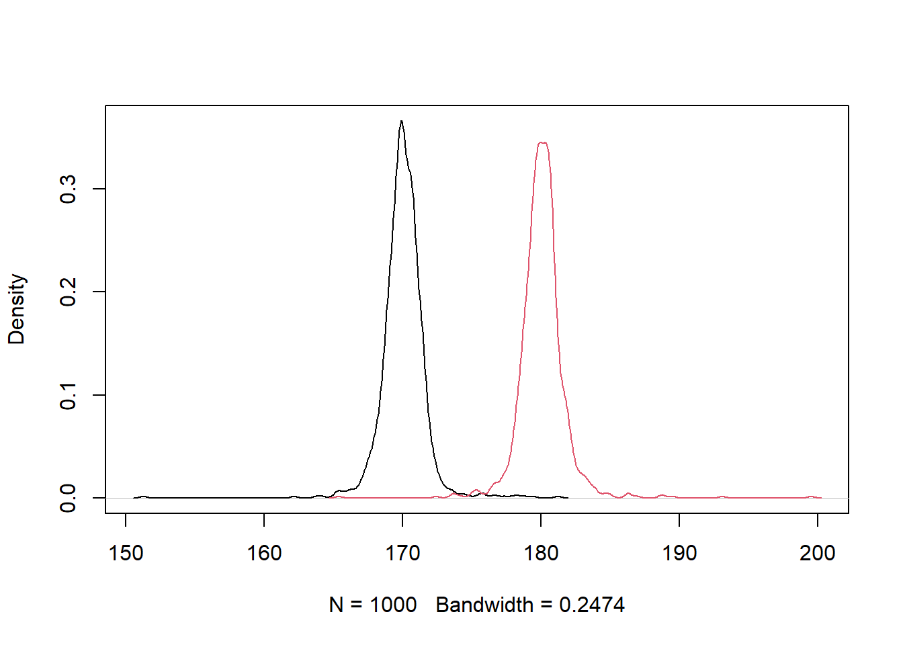
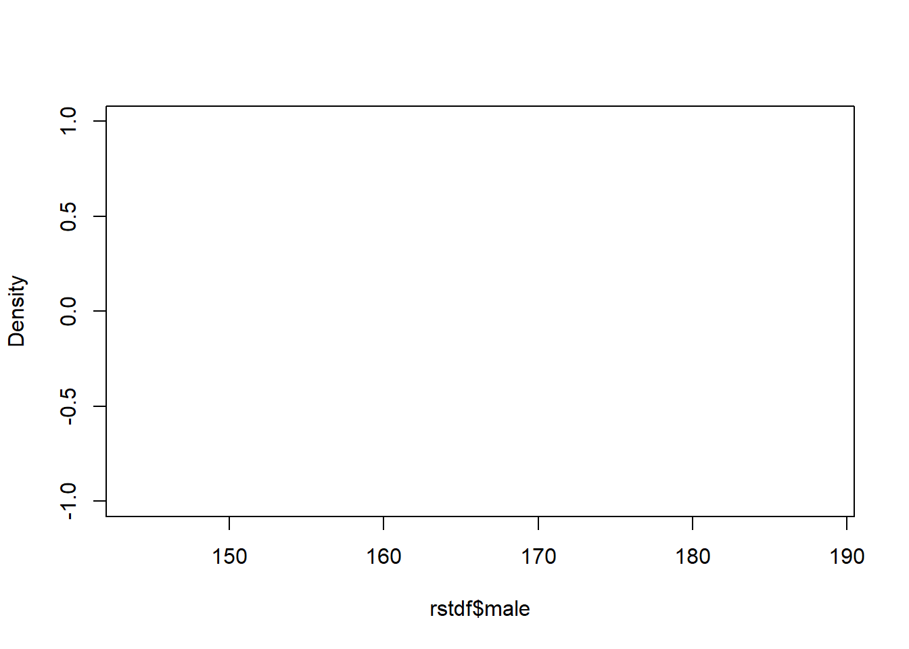
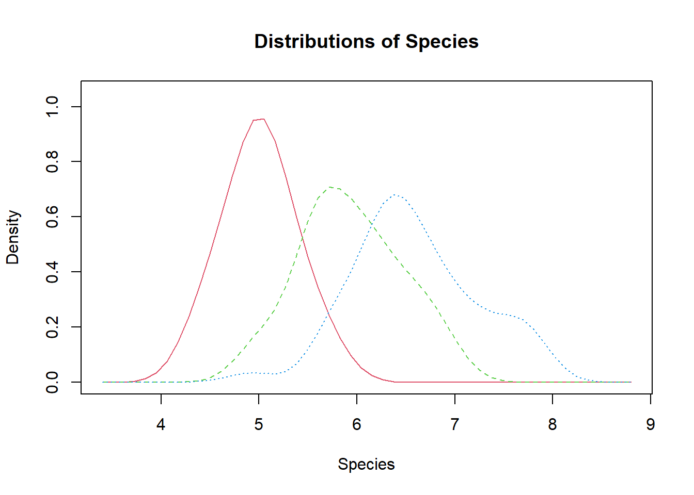
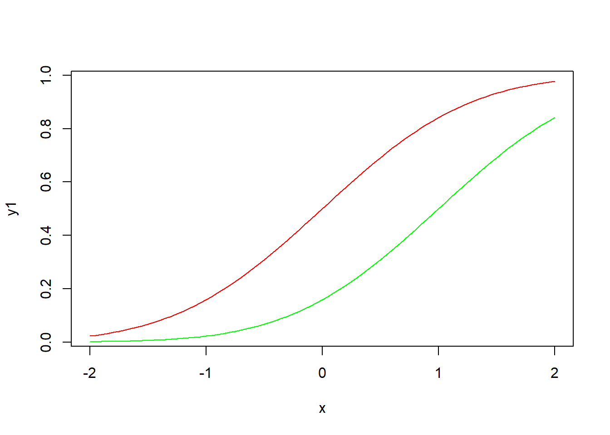
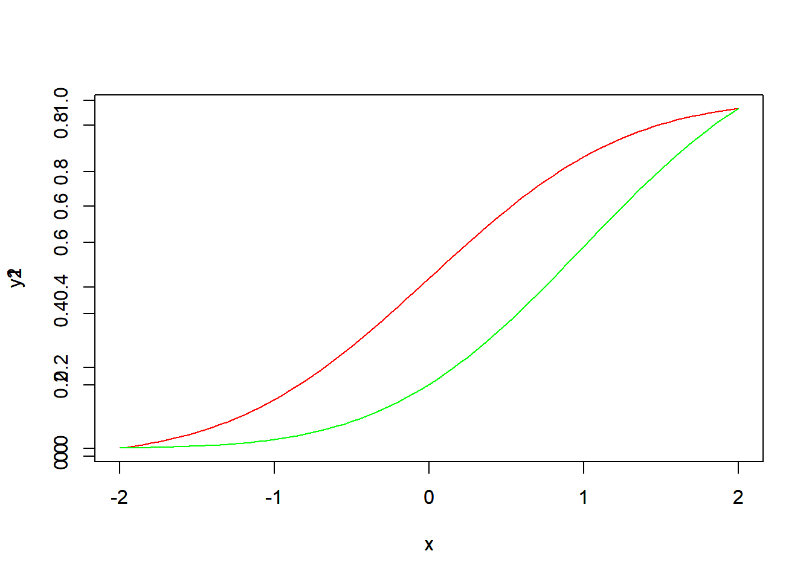
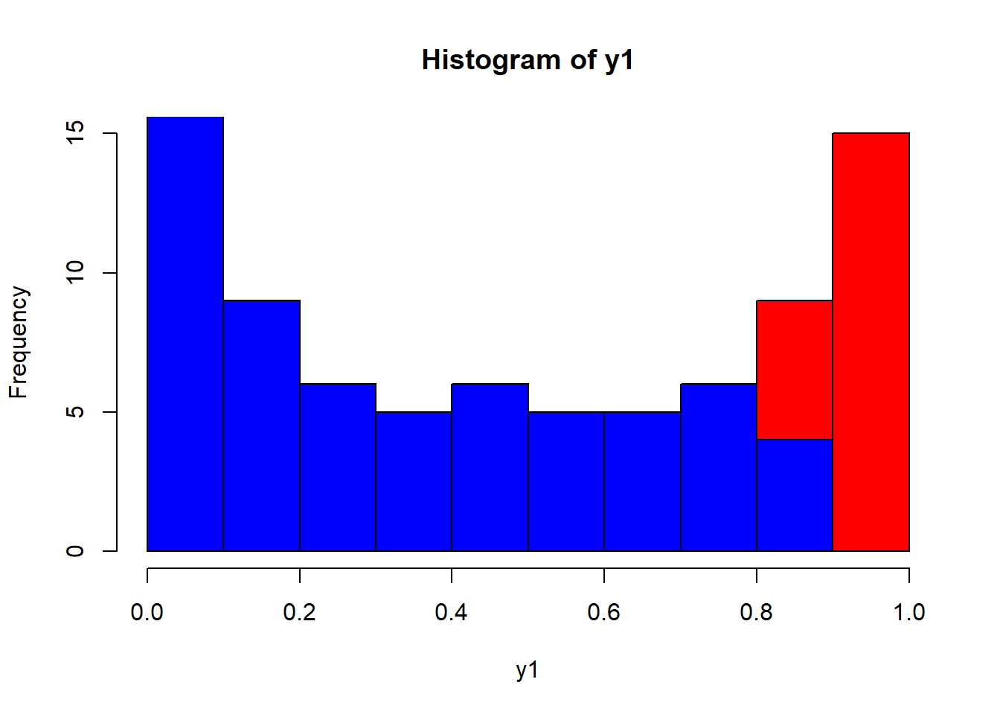

simulation 1
simulate 1
| 身高 | 女生 | 男生 |
|---|---|---|
| 1 | 0 | |
| 平均 | 180 | 170 |
| 標準差 | 10 | 10 |
fn_num<-100
fh<-rnorm(fn_num,180,10)
fm<-rnorm(200-fn_num,170,10)
height<-c(fh,fm)
sex<-c(rep(1,fn_num),rep(0,200-fn_num))
r1<-tapply(height, sex,mean)
r1 0 1
171 181 fn_num_set<-sample(1:199,1000,replace=T) #先抽出female的個數
rst<-matrix(rep(0,2000),ncol=2) #每一次抽樣男生/女生的平均值
for(idx in 1:1000)
{
fn_num <-fn_num_set[idx]
fh<-rnorm(fn_num,180,10)
fm<-rnorm(200-fn_num,170,10)
height<-c(fh,fm)
sex<-c(rep(1,fn_num),rep(0,200-fn_num))
r1<-tapply(height, sex,mean)
rst[idx,1]=r1[1]
rst[idx,2]=r1[2]
}
summary(rst) V1 V2
Min. :151 Min. :165
1st Qu.:169 1st Qu.:179
Median :170 Median :180
Mean :170 Mean :180
3rd Qu.:171 3rd Qu.:181
Max. :181 Max. :200 下面這個,好像在rmarkdown 畫不出來 unknown reason !!
alist<-list(rst[,1],rst[,2])
dinfo<-lapply(alist,density)
t1<-sapply(dinfo,function(item){range(item$x)})
rx<-range(t1)
t2<-sapply(dinfo,function(item){range(item$y)})
ry<-range(t2)
plot(dinfo[[1]], xlim = rx, ylim = ry, main = "")
for(i in 1:length(dinfo)) {
lines(dinfo[[i]], xlim = rx, ylim = ry, col = i)
} 
轉函數
總體而言，轉成函數的考慮就是如何避免hard coding。
plot.multi.density<-function (alist)
{
dinfo<-lapply(alist,density)#每組資料，求density
# 每組資料的x範圍
t1<-sapply(dinfo,function(item){range(item$x)})
rx<-range(t1)
# 每組資料的y範圍
t2<-sapply(dinfo,function(item){range(item$y)})
ry<-range(t2)
plot(dinfo[[1]],xlim = rx, ylim = ry, main = "")
for(i in 1:length(dinfo)) {
lines(dinfo[[i]],xlim = rx, ylim = ry, col = i)
}
} 討論：上面函數的限制？ 第一個限制，先看看有沒有預設組別
問題：如果要加上區域顏色？ 簡單一點的話，可以用選項type=“h”, (plot, line兩個函數都吃)
應用自己的函數
alist<-list(rst[,1],rst[,2])
plot.multi.density(alist)上面的函數，預設參數是傳入使用者指定的list，裡面有使用者指定的組別 但是如果因為需要，發現傳入矩陣比較方便（例如每一個欄位代表每一組的模擬結果，那樣怎樣避免hard coding?
elist<-vector("list",ncol(rst))#指定大小的list,如果空集合elist<-list()
for(i in 1:ncol(rst)){
elist[[i]]<-rst[,i] #注意雙括號
}利用套件sm
The sm package also includes a way of doing multiple density plots. The data must be in a data frame.
library(sm)Package 'sm', version 2.2-5.6: type help(sm) for summary informationrstdf<-data.frame(rst)
colnames(rstdf)<-c("male","female")
sm.density.compare(rstdf$male, rstdf$female)
# Add a legend (the color numbers start from 2 and go up)
#legend("topright", levels(data$cond), fill=2+(0:nlevels(data$cond)))sm 範例
sm.density.compare(iris$Sepal.Length, iris$Species, xlab="Species")
title(main="Distributions of Species")
x <- seq(from = 110, to = 174, by = 0.5)
y1 <- dnorm(x, mean = 145, sd = 9)
y2 <- dnorm(x, mean = 138, sd = 8)
plot(x, y1, type="l", lwd=2, col="red",
main="Systolic Blood Pressure Before and After Treatment",
xlab = "Systolic Blood Pressure (mmHg)",
ylab = "Frequency", yaxt="n",
xlim = c(110, 175), ylim = c(0, 0.05))
lines(x, y2)
polygon(c(110,x,175),c(0,y2,0), col="firebrick3",
border = "black")
polygon(c(117,x,175),c(0,y1,0), col="dodgerblue4",
border = "black")
ylab=c(seq(from=0, to=175, by=25))
y=c(seq(from=0, to=0.05, length.out = 8))
axis(2,at=y,labels=ylab, las=1)#下左（2），在y向量上標ylab,las 文字和座標的角度
text(x = 120, y = 0.045, "- Pre-Treatment BP", col = "dodgerblue4", cex = 0.9)
text(x = 120, y = 0.04, " - Post-Treatment BP", col = "firebrick3", cex = 0.9)
points(109, 0.0445, pch = 15, col = "dodgerblue4")
points(109, 0.0395, pch = 15, col = "firebrick3")
其他測試
x <- seq(-2, 2, 0.05)
y1 <- pnorm(x)
y2 <- pnorm(x,1,1)
plot(x,y1,type="l",col="red")
lines(x,y2,col="green")
plot( x, y1, type="l", col="red" )
par(new=TRUE)
plot( x, y2, type="l", col="green" ) note: add=TRUE 有時候不作用，例如plot
hist( y1 ,col="red" )
hist( y2, add=TRUE,col="blue" )